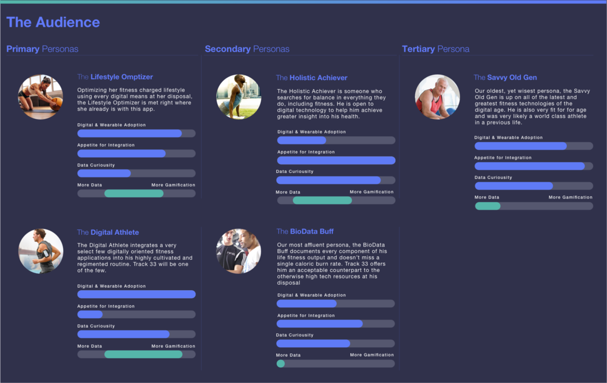
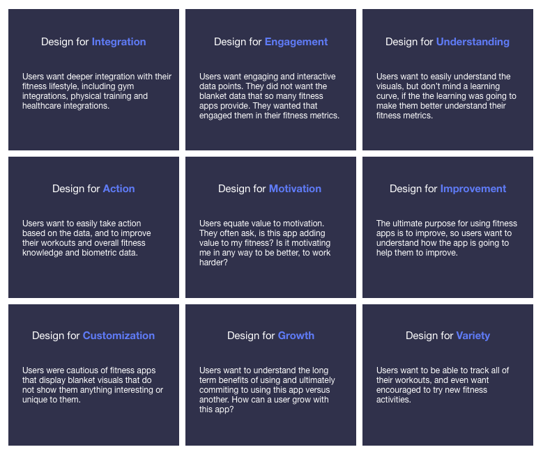
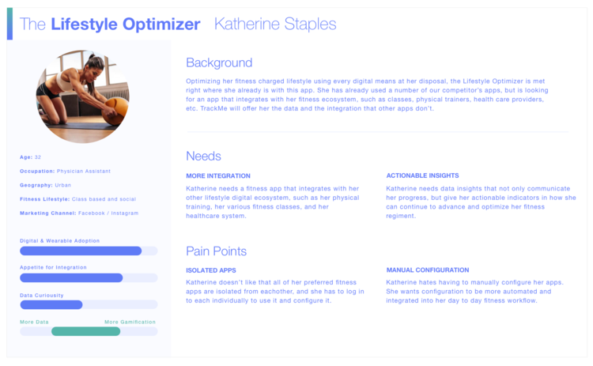
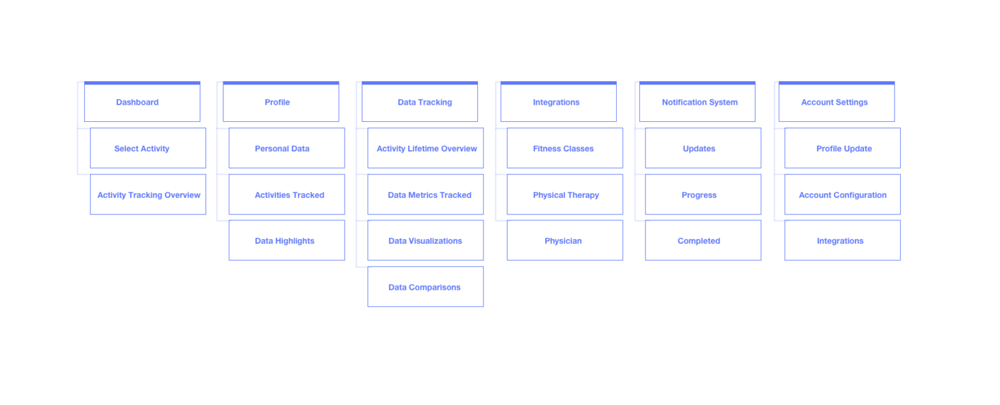
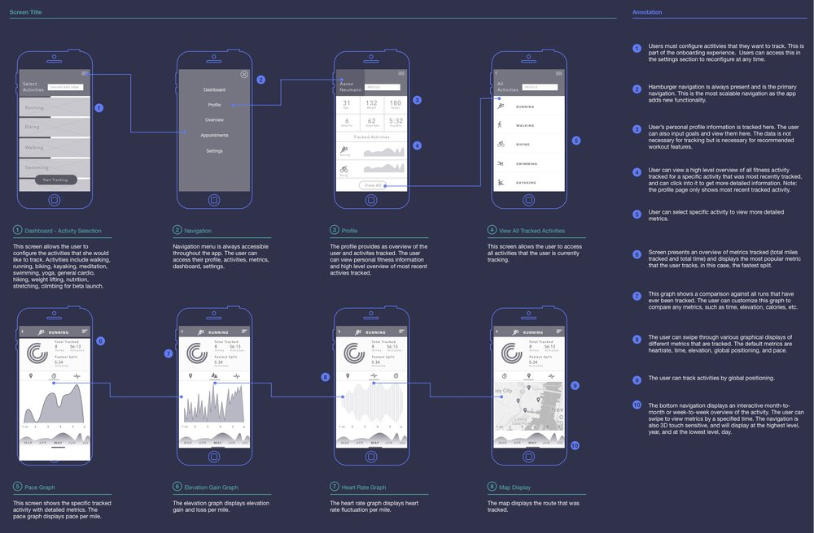

User research, User personas, Prototypes, User testing
Project Details
Challenge: Develop an IOS app that visualizes health and fitness based metrics.
Company: Independent
Role: UX UI Designer
Contribution
User Research
Product Strategy
Persona Development
Task Analysis
Information Architecture
Wireframes
Usability Studies
High Fidelity Mockups
Prototypes
Interview
Tools Used
Pen and Paper
Balsamiq
Xtensio
Sketch
Principle
Invision
The goal was to explore interactions and visuals that offered fluid control over data display in order to produce more meaningful data insights relative to the unique user. Progress in any physical activity requires learning at both the holistic view, and the granular one. It’s the that interplay, between the holistic and the granular that this app explores.
The Approach
Understanding the audience
We established 5 target audiences based on our generative research: The Lifestyle Optimizer, The Digital Athlete, The Holistic Achiever, The BioData Buff, and The Tech Savvy Older Generation.

Targetted audience
Customer insights
The most significant theme that surfaced during research, was that of all the apps currently on the the market, fall short and are not used on a continuous basis by users.
Users wanted the data to present the necessary context to help them learn and advance.
Users wanted clear incentives on the benefits of using this app versus another fitness app, and incentives overall in terms of its return on investment in time and use.
Users expressed a clear desire for the app to integrate with other components of their fitness lifestyle.

Insights
The Process
Persona development
For this app, broadening our persona segmentations proved useful. Since the core concept was vetted and in high demand due to in market gaps, the challenge became designing for the broadest audience possible, whilst still keeping the visualizations and metrics geared toward a professional caliber athlete.

Primary Persona
Information Architecture
Information architecture helped clarify our navigation system.

Information Architecture
Workflows
Workflows were pressured tested against the architecture and used to understand FitBit integration capabilities to ensure all data visuals were feasible through wearable integrations.

Workflow
Next steps
Our process was one of both exploration and tradition. Solutions were vetted by target users, and our methods fell very much within a traditional full-scale user experience process.We also kept exploring new ideas and concepts to test and refine in order to optimize the core experiences. Understand. Make. Iterate. Test. Fail. Refine. Reflect. Understand. Repeat until optimized. Our next step is to take all the data and create a working prototype of the app.